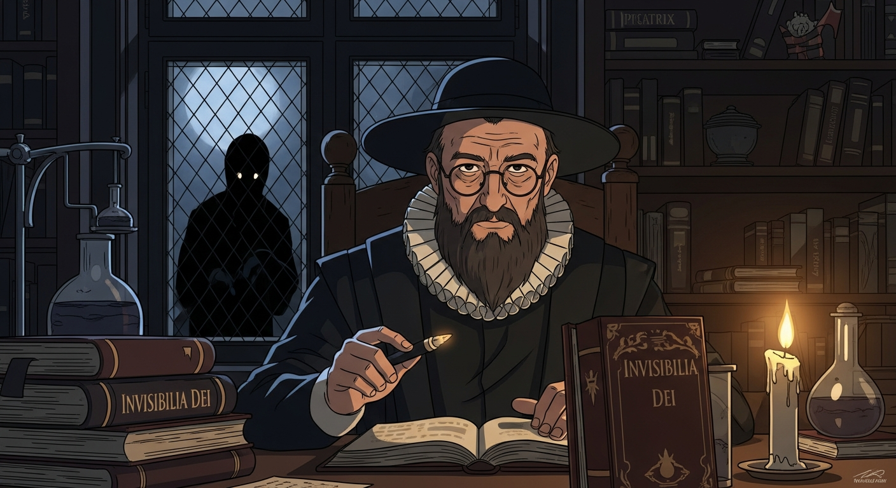
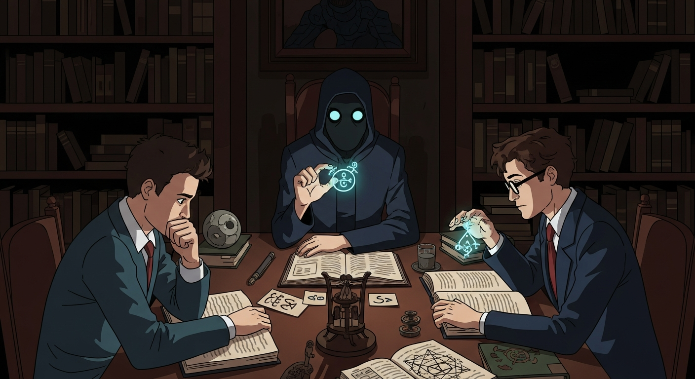

Prague, 1580. Rabbi Loew, a scholar steeped in Kabbalah, is haunted. Not by spirits, mind you, but by *Invisibilia Dei*, glimpsed within ancient texts like the *Picatrix*. Whispers of dark omens intertwine with Agrippa's warnings and Dee's angelic conversations—a storm of unseen forces brewing. The threat of pogroms, a very real manifestation of something truly evil, looms large.

Loew, guided by Clark's cryptic prose, seeks a protector. He consults texts that recall the *Evil Dead*. Tradition, after all, evolves. Sledge and Alexander observe, struck by his blend of pragmatism and... awe. He chants Kabbalistic verses; the lab crackles. It’s not belief, mind you, but raw intellectual power at play. Will this artifice save Prague?